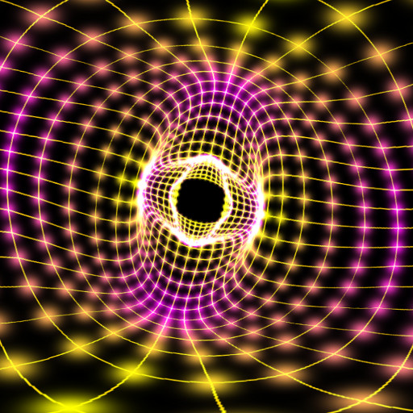

KBOs

Kuiper Belt Objects. This collection was generated from the Minor Planet Center distant object lists: 'Transneptunian objects' and 'Centaurs and scattered disk objects', with a quality cut on the orbital observation arc (MPC parameter Opps. > 1, with the exception of 2013 RF98 which did not make that cut but was included). Note that this dataset includes classical Centaurs, but the default parameter cuts exclude them.
These tables were pulled and converted on January 21, 2016. The code and instructions for updating the data set is here:
KBOparams
There are several variables to control the appearance and behaviour of this dataset. They are found in KBOparams.
- KBOAnimateDiscovery: set this to 1 to have the KBOs appear by discovery date. See Alex Parker's Beyond Neptune visualization for an example of this kind of animation.
- KBOOrbits: set this to 1 to display the full orbit as a line
- KBOOrbitsAlpha: set the alpha value for the orbit line. Alpha values are 'jittered' to allow for overdrawing with small values, see this blog post for details.
- KBORadius: controls the size of the KBO marker.
- KBOMarkerType: sets the type of marker placed at the KBO position.
- Gaussian
- soft circle with outline and center dot
- soft circle with center dot
- ring
- hard circle
- KBOSizeType: sets how the size is calculated for each KBO marker
- Uniform size
- Scaled according to an estimate of physical radius. Note this is only calculated from the H band absolute magnitude and does not include albedo effects. Because the large objects tend to be much brighter the size difference between small and large objects is likely to be exaggerated.
values between 0 and 1 smoothly mix the two size techniques, allowing for smooth animated transitions.
- KBOMarkerAlpha: sets the alpha value for the KBO marker.
- KBOaCut: only display KBOs with semimajor radius greater than this value (in Astronomical Units).
- KBOPeriCut: only display KBOs with perihelion greater than this value (in Astronomical Units).
- KBOApCut: only display KBOs with aphelion less than this value (in Astronomical Units).
- KBOiCut: only display KBOs with inclination greater than this value (in degrees).
The module will appear as "KBOs" in the object tree, under Solar System.
Version
2.0
Created
12 February, 2016
Created By
Mark SubbaRao
Adler Planetarium
Created with the support of the Kavli Foundation
CC-by